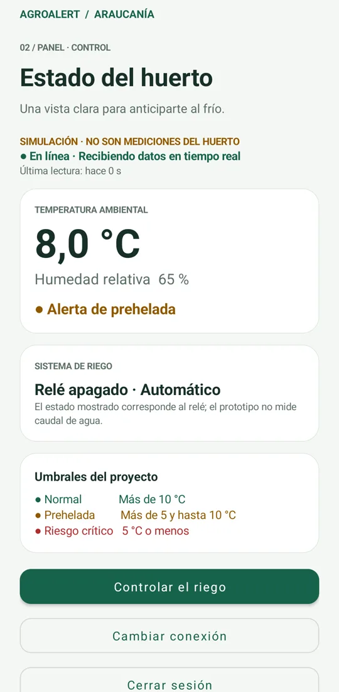

Decisiones a ciegas
Sin temperatura ni humedad en el momento, se riega o se cubre por intuición.
Tecnología para el campo · La Araucanía
AgroAlert monitorea la temperatura y la humedad de tu huerto y te permite verlas y controlar el riego desde tu celular, por Bluetooth o Wi-Fi, sin depender de estar ahí.

Captura real de la app · datos del simulador
El problema
En La Araucanía, una noche de frío puede dañar un cultivo que tomó meses. Muchas decisiones —regar, cubrir o esperar— se toman sin datos y sin estar en el campo.
Sin temperatura ni humedad en el momento, se riega o se cubre por intuición.
Una helada nocturna puede afectar el cultivo antes de que alcances a reaccionar.
Revisar el huerto implica traslados. Si no estás, no sabes qué está pasando.
La solución
AgroAlert convierte lecturas del ambiente en información útil, sin lenguaje técnico y sin sacarte de tu rutina.
Un sensor de temperatura y humedad registra las condiciones del ambiente en el huerto.
El sistema compara las lecturas con los umbrales del proyecto: normal sobre 10 °C, prehelada entre 5 y 10 °C, riesgo crítico en 5 °C o menos.
La app recibe los datos cada 2 segundos por Wi-Fi y los presenta en un panel simple, desde tu celular.
Puedes encender o apagar el riego, o dejarlo en automático. Cada orden se confirma desde el nodo.
La app 1.5.0 conecta por Bluetooth con el Arduino Uno + HC-05 (baud negociado automáticamente), también por Wi-Fi con el nodo o el simulador, y permite crear cuentas propias con acceso completo.
Características principales
Cada función responde a una necesidad concreta del manejo diario del cultivo.
Temperatura y humedad actualizadas de forma continua, sin bloquear la aplicación.
Tres estados claros —normal, prehelada y riesgo crítico— según los umbrales del proyecto.
Encender, apagar o volver al modo automático. El panel muestra el estado real del relé.
Toda cuenta creada ve el panel y controla el riego. No hay perfiles Control ni Monitor.
Tres intentos fallidos bloquean el ingreso durante 60 segundos.
Funciona en la misma red Wi-Fi del nodo, sin servicios en la nube ni suscripciones.
Contexto comercial
AgroAlert está orientado a pequeños y medianos agricultores de La Araucanía que necesitan tomar decisiones a tiempo sin estar permanentemente en el cultivo.
Seguridad y confiabilidad
El acceso y las órdenes están protegidos en cada paso, desde el celular hasta el nodo que acciona el riego.
Tras tres intentos fallidos, el acceso se bloquea durante 60 segundos.
Se guardan con sal aleatoria y PBKDF2-HMAC-SHA256; nunca en texto plano. Firebase Auth está preparado para tomar el relevo.
Toda cuenta autenticada opera el riego; el nodo sigue exigiendo su clave.
El estado del relé que ves es el que reporta el nodo, no una suposición de la app.
Si el enlace se corta, la app marca los datos como antiguos y bloquea los controles.
Diseñado para operar en una red local de confianza. El prototipo no expone el nodo a Internet.
Descarga
Instalación directa, sin tiendas de aplicaciones ni servicios obligatorios.
APK para Android
Novedades 1.5.0: una sola clase de cuenta (sin perfiles), Firebase Auth/Firestore preparado para activar y la reparación Bluetooth v1.4 (baud 38400/9600 negociado, reconexión sola). Las claves mantienen historial de 3, vigencia de 90 días y rechazo de patrones comunes. ¿Versión anterior? Descargar APK 1.4.0.
El archivo está firmado para instalación directa. No requiere servicios en la nube ni planes de pago.
48ED536D4224464A5FD03E5321B2CE40AD26F8FC572A65817A8257E8EC110B18
Hazlo desde este mismo celular Android.
Cuando el sistema lo pida, autoriza instalar apps de origen desconocido.
Cuenta inicial: admin / admin1. Cualquier cuenta creada ve y controla todo.
🧭 ¿Armando el nodo? Sigue la guía 3D interactiva del cableado paso a paso (Arduino, protoboard, resistencias y HC-05).
Para usar la app, vincula el HC-05 del Arduino por Bluetooth o conéctate por Wi-Fi al nodo en la misma red. El proyecto incluye un simulador para pruebas sin hardware.
Equipo y contacto
Proyecto TI3042 · INACAP · 2026
Docente: Franco Fossati Cordero
agroalert.araucania@gmail.com
La Araucanía, Chile
Para consultas sobre el proyecto, la app o una posible colaboración.